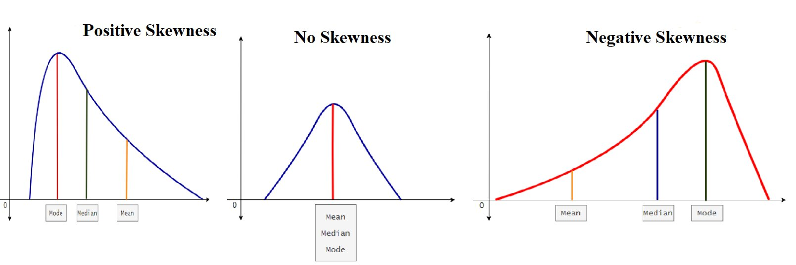
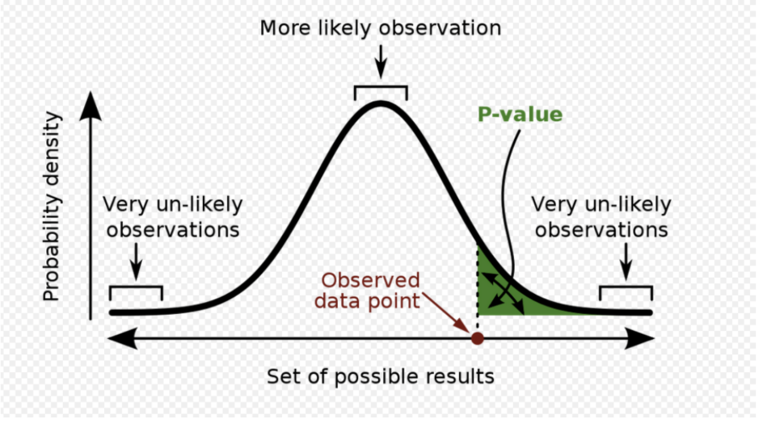
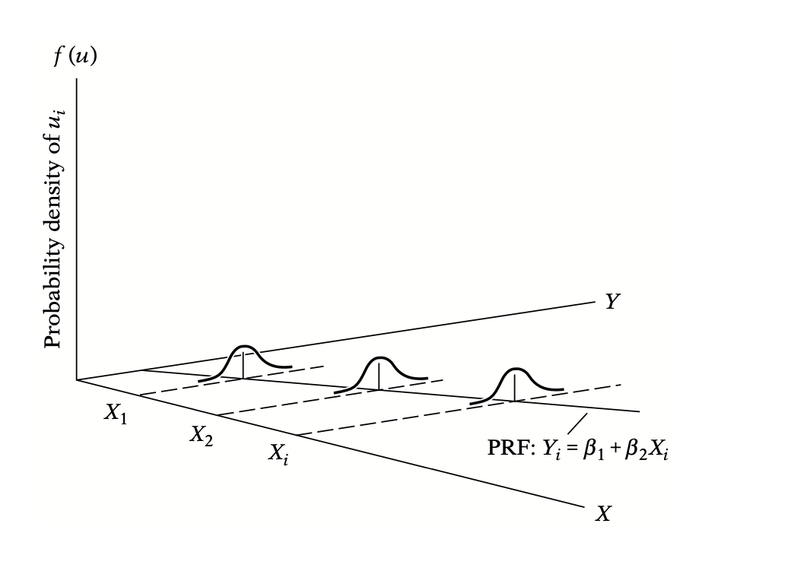
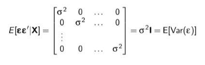
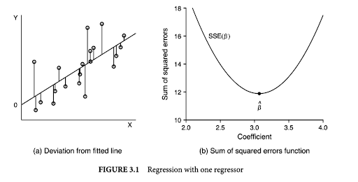
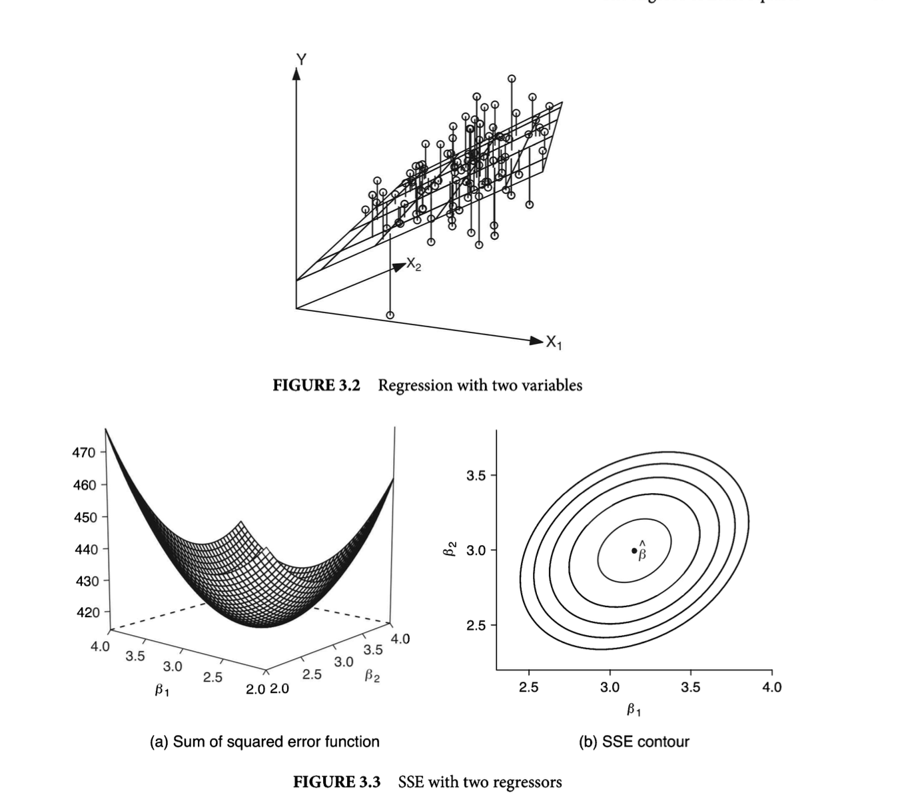

Data 1 & 2
![]()
Preface
These notes were compiled in my first year of graduate school. These two classes cover simple to complex linear regression. Additionally, some other methods are discussed such as Logit/Probit, Causal Inference, and time-series. These other methods were only discussed in brief and require their own separate set of notes.
Reminder: These are notes and do not encompass every idea or detail associated with the concepts. They do not (and cannot) replace classes or reading the material.
Section 1: Descriptive Statistics
While simple, it is critical you understand these. It is okay if you forget (and you will), just remember to keep reviewing. It helps to walk through the formula step by step. I have provided some commentary on the rationale behind the formula in the sections below.
Mean (Average)
\[ \bar{x} = \frac{\sum_{i=1}^{n} x_i}{n} \]
Above is the formula for mean (average).
Median
\[ \text{Median} = \begin{cases} x_{\frac{n+1}{2}} & \text{if } n \text{ is odd} \\ \frac{1}{2}(x_{\frac{n}{2}} + x_{\frac{n}{2} + 1}) & \text{if } n \text{ is even} \end{cases} \]
Don’t worry about knowing this formula. Arrange everything in order. Select the middle number.
Mode
Another measure of central tendency
Mode is simply what number appears the most in our dataset.
{4,7,3,7,8,1,7,8,9,4,7}
Our mode would be 7
- It appears the most.
We don’t use mode that much as a measure of central tendency but it still provides some information about the distribution.
Don’t worry about the formula
Variance
\[ \text{Variance} (s^2) = \frac{\sum_{i=1}^{n} (x_i - \bar{x})^2}{n-1} \]
The average of the squared differences from the Mean.
Variance is a measure of SPREAD.
Let’s walk through the formula step by step.
The \(\Sigma\) means to sum all the values together.
\((x_i - \bar{x})\)
in this part we are taking each observation and subtracting it by the mean (average).
Now lets add the square term. \((x_i - \bar{x})^2\)
Why do we square this?
Imagine a number line from 0 to 100. We have some dataset where the mean is 50. Now let’s say one of our observations is 38. 38-50 = -12. See what happens!? We have a negative number. All observations to the left of our mean are negative while all observations to the right of our mean are positive.
- When we add these all up without the square term, we get ZERO!
Thus we square to accommodate for these canceling out.
- There are other reasons we square but they aren’t relevant here and this is the main reason.
Now the \(n-1\)
N represents the number of observations.
Why are we subtracting it by 1?
If we were calculating the population variance, then we wouldn’t subtract by 1. However, we are pretty much never working with the population. We are always using some samples.
This part is not super intuitive. BUT, we are using the sample mean, NOT the population mean to calculate the variance.
We don’t know what the “true” population mean is. We have an estimate of it using our sample. Thus, there is some uncertainty around the sample mean (we don’t know if the sample mean is = to the population mean). To account for this uncertainty we add a -1 to our denominator.
By subtracting 1 from the denominator this makes the spread a little larger to account for that uncertainty. Think about what happens when we make our denominator smaller compared to if we don’t. Example:
\(\frac{16}{4-1}\) vs. \(\frac{16}{4}\)
- the one with the \(4-1\) denominator will have a larger output and thus account for the uncertainty in our measurement.
Standard Deviation
\[ \text{Sample Standard Deviation} (s) = \sqrt{\frac{\sum_{i=1}^{n} (x_i - \bar{x})^2}{n-1}} \]
Standard deviation is denoted by \(s\) or \(\sigma\) (lower case sigma).
Standard deviation represents how far the numbers are from each other.
Look how similar this equation is compared to the variance equation.
- The standard deviation is the square root of the variance!
I won’t explain the whole formula again.
I will explain why we square root the equation
- We take the square root to put the output back into its original units. Our output is in the same units as the mean.
Have a good understanding of standard deviation THEN understand standard error.
Standard Error
\[ \text{Standard Error} (\text{SE}) = \frac{s}{\sqrt{n}} \]
The numerator (s) is standard deviation!
What is standard error?
- It is the standard deviation of the means!
OK, so what is the difference between standard deviation and standard error?
Standard deviation quantifies the variation within a set of measurements. (singular)
Standard error quantifies the variation in the means from multiple sets of measurements. (multiple)
What is confusing is that we can get standard error from one single measurement, even though it describes the means from multiple sets. Thus, even if you only have a single set of measurements, you are often given the option to plot the standard error.
Just watch the damn video.
Why do we take the square root of observations in the denominator?
By dividing by the square root of the sample size, we’re essentially adjusting for the fact that the standard deviation of the sampling distribution of the mean tends to decrease as the sample size increases. This is due to the Central Limit Theorem, which states that the sampling distribution of the sample mean becomes approximately normal as the sample size increases, with a mean equal to the population mean and a standard deviation equal to the population standard deviation divided by the square root of the sample size. (chat gpt gave me this and it is a kick ass explanation)
- It is because of this that standard error gets smaller when we have more observations!
Skewness
You do not need to know the formula. You just need to know what skewness looks like and how to properly identify when your data is skewed.
When our distribution has no skew, the mean, median, and mode are all the same value.

Positive skewness is also called “right skew”. Notice where the mean/median/mode are.
Negative skewness is also called “left skew”. Notice where the mean/median/mode are.
Covariance
\[ \text{Covariance} (\text{cov}(X, Y)) = \frac{\sum_{i=1}^{n} (x_i - \bar{x})(y_i - \bar{y})}{n-1} \]
A measure of how much two random variables vary together
- Similar to variance BUT covariance deals with two variables.
Let’s walk through the formula.
The numerator tells us to take the sum of each observation minus its mean for both variables (x and y). Then multiply.
- Remember we divide by N-1 because we are using the sample means and not the population means. Thus we have a bit of uncertainty. By subtracting 1, it makes our denominator smaller and subsequently the output larger, representing the greater uncertainty.
The output of covariance is a number that tells us the direction of how these two variables vary together.
- It does not tell us the strength of the relationship between the two variables.
Look how similar this formula is compared to the variance formula!
Covariance is influenced by the scale of the variables.
- Meaning its hard to read/understand by itself.
Correlation
\[ r = \frac{\sum_{i=1}^{n} (x_i - \bar{x})(y_i - \bar{y})}{\sqrt{\sum_{i=1}^{n} (x_i - \bar{x})^2} \cdot \sqrt{\sum_{i=1}^{n} (y_i - \bar{y})^2}} \]
This formula looks scary! It actually is super simple!
Does the numerator look familiar? Look back at the covariance formula! The top IS covariance!
- The denominator looks familiar too! It is the standard deviation for x and y.
Correlation is similar to covariance but it is more useful.
We interpret correlation from -1 to 1.
-1 represents a perfectly negative correlation
- This will almost never happen
1 represents a perfectly positive correlation
- this will almost never happen.
Correlation tell us the direction and strength of a linear relationship between two variables.
Correlation is covariance divided by the product of the two variables standard deviation. So they measure the same thing but one belongs to [-1,1] and the other (covariance) take any value.
Section 2: Statistical/Hypothesis Testing
Can we believe this finding? Is this a real relationship? Hypothesis testing helps us answer those questions. There are different types of tests we can do. Below are the “basic” tests. More complicated models will use these tests in some manner. For example, Ordinary Least Squares (OLS) uses a t-test to help us understand whether the relationship (the beta) is statistically significant.
These test correspond with a specific distribution a.k.a a probability distribution. A probability distribution TK
When we use these tests, we are using their respective probability distributions.
t-Test
Probability Distribution:
Purpose:
Uses:
\(\chi^2\) Test
Purpose:
Uses:
Analysis of Variance (ANOVA) Test
Purpose:
Uses:
F-Test
Purpose:
Uses:
p-value
Read very closely! So many people misinterpret this concept!
Definition:
A p-value is the probability of observing a test statistic value equal to or more extreme than the value you computed if the null were true.
Alternatively, the p-value is the probability of making a type I/II error.
Purpose:
If we assume the null hypothesis is true, then we could draw the sampling distribution centered around zero. By specifing the null hypothesis we can invoke the central limit theorem.
P-values help us determine how statistically significant our relationship is. Remember that we are using data we have to tell us about data we do not have.

Uses:
The p-value is decided by the researcher. Convention typically sets the p-value at .10 and below. However, .10 is still not ideal, the lower the better.
Important Notes:
the p-value does not tell us anything substantive. It simply tells us
Section 3: Regression Overview/Review
The big kahuna. There are other methods but regression is perhaps the most important. It is easy to understand, straightforward, and powerful. Your ability to understand it inside and out will make you smarter in every way. You are Tony Stark and regression is your Iron Man suit.
Assumptions (Scalar Notation)
Assumption 1: \(\epsilon_i\)is normally distributed
- This assumption is for the purposes of constructing a hypothesis test.
- We don’t need this to estimate our beta.
- But by assuming the errors are normally distributed then we can run a hypothesis test (t-test) to see if we accept or reject the null hypothesis of beta = 0.
Assumption 2: \(E[\epsilon_i]=0\)
- The distance between the observed and fitted line is zero. (the residual is zero)
- This rarely happens BUT we estimate our \(\hat{\beta}\)’s so that the error is as close to zero as possible.
- The goal is to have a line of best fit that does this for all observations.
- This rarely happens BUT we estimate our \(\hat{\beta}\)’s so that the error is as close to zero as possible.
Assumption 3: \(Var(\epsilon_i)=\sigma^2\)
- This is homoscedasticity (or no heteroskedasticity).
We want constant error variance.
Homoscedasticity visualized:

Homoscedasticity visualized (From Gujarati & Porter)
Assumption 4: \(Cov(\epsilon_i,\epsilon_j)=0 \:\forall\:i \neq j\)
This represents no autocorrelation
The disturbances of i and j are NOT correlated
\(\forall\) means “for all”
Assumption 5: \(x_i\) is fixed in repeated sampling
- X values are independent fo the error term
Assumption 6: Sample regression model correctly specified
Our sample regression equation correctly identifies the variables in the theoretical population regression model.
We include all relevant confounding variables.
No omitted variable bias.
Assumption 7: \(Cov(\epsilon_i,x_i)=0\)
- covariance between residuals and parameters is equal to zero
Assumption 8: Parametric Linearity
Linear in the parameters.
We do NOT raise the betas to a power.
We can raise the variables (x’s) to a power and it remains linear.
Note: Logit models add a “link function”. This line is not linear but it is still a linear relationship.
Assumption 9: \(x_i\) must vary
- Duh. You can’t do anything if your X variable doesn’t vary.
Assumption 10: n > k
- This relates to degrees of freedom.
- We need more operations than we have parameters or else we do not have enough information to test a relationship.
Assumption 11: No perfect multicollinearity
- We wouldn’t include a column for male and a column for female because that would be perfect multicollinearity.
- Multicollinearity is not a big issue (it is natural there will be some level of collinearity between our variables).
- BUT perfect multicollinearity is bad and we do not want it.
- Multicollinearity can (in some cases) disappear as we increase the number of observations.
- This is easy to see in matrix algebra or an excel sheet.
Assumptions (Matrix Notation)
Note: These assumptions are the EXACT same assumptions listed above. The difference is in notation. Why do we do this? I answer this later, but basically its a different way to write math that is more concise and easier to understand. We use matrix algebra/notation because as our model gets bigger, scalar notation gets more complicated to read/keep track of.
Why do we bold letters? Bold letters represent matrices.
Assumption 1: Linearity in the parameters
\(y_i=x_{i1}\beta_1+x_{i2}\beta_2+...+X_{iK}\beta_K+\epsilon_i\)
- The model specifies a linear relationship between y and X
- Do not raise the \(\beta\) to a power.
Assumption 2: Full rank
- X is an n x K matrix with rank K
- There is no exact linear relationship among variables
- Sometimes called the “identification condition”
- What is “rank”?
It is the number of linearly independent columns
- If the number of independent columns is equal to the total number of columns then the matrix is full rank.
- This assumption relates to the scalar assumption of no perfect multicollinearity.
Assumption 3: Exogeneity of the independent variables
The independent variables contain NO predictive information about
The expected value of is not a function of the independent variables at any observation (including i):
\(E[\epsilon_i|x_{j1},x_{j2},...,x_{jK}=0\)
- \(E[\epsilon_i|\textbf{X}]=0\)
What does this mean?
The independent variables are not influenced by the error term or any other unobserved factors in the model.
The X variable does not depend on the Y variable (reverse causality). We can’t have the Y variable influencing our regressors (that would be endogeneity)
Assumption 4: Spherical disturbances
No autocorrelation
- \(E[\text{Cov}(i,j|\mathbf{X})] = 0\: \forall \:i=j\)
Assumed homoscedasticity
\(E[\text{Var}(i|\mathbf{X})] = 2\: \forall\: i=1,2,\ldots,n\)
Why assumed?
Some level of heteroscedasticity is not fatal
We can fix it. But homoscedasticity is always preferable.
These two assumptions can be written mathematically into one single assumption using matrix algebra:

The off-diagonal (the zeros) represent autocorrelation
- if these are not zero (or at least very close) we have autocorrelation
The main-diagonal (the variance) represents our homoscedasticity assumption
- If these values along the main diagonal are not the same or at least very close, then we have heteroscedasticity.
Assumption 5: Data generation
The data generating process of X and \(\epsilon\) are independent.
X is generated by a non-stochastic process
this assumption allows us to say “conditional on X”
This assumption is a bit confusing to me.
From my understanding, we want our X values to be fixed. We then take samples to see how our y values vary based on the fixed values of X.
Let’s say you want to predict annual income based on years of experience. Your manager gave you three lists of employees with their annual income. Each list corresponds to a particular experience level — let’s say 3 years, 6 years, and 10 years of experience respectively. Each list contains data on 50 employees. As you can see, the x-values are fixed(3, 6, 10), but have repeated samples (50 data points per sample). This is what is known as Non-stochastic regressors
Assumption 6: \(\epsilon\) is normally distributed
This is useful for constructing our hypothesis tests and test statistics
Technically, we don’t need this for estimating our beta, just uncertainty surrounding it.
Formula for deriving \(\beta\)
Problem: We have two missing terms, 𝜷 and 𝛆. Knowing one of these will tell us the line. But since we don’t know either of these terms, how do we find it out?
We have to solve for beta. Solving for beta in Ordinary Least Squares (OLS) requires us to find a line of best fit that minimizes the unexplained difference (the error).
To do this we take the sum of the squared residuals
It may help to understand this through the formula of the residual.
First the residual is the amount our actual observed value differs from the predicted value (This is in matrix notation).
\((y-\textbf{X}\beta_0)\)
- y is our observed value and the \(\textbf{X}\beta_0\) is our predicted value (the line of best fit).
WE SQUARE THIS! SO NOW:
\((y-\textbf{X}\beta_0)'(y-\textbf{X}\beta_0)\)
The (’) means transpose. It is matrix notation that allows us to multiply these two matrices (vectors).
Why do we square?
- We square the residuals for a bunch of reasons. Mainly: if we don’t, the residuals (Both positive and negative) cancel out.
Multiplying this through, we get:
\(y'y-y'\textbf{X}\hat{\beta_0}'\textbf{X}'y+\hat{\beta_0}'\textbf{X}'\textbf{X}\)
You collect the terms and simply.
https://www.youtube.com/watch?v=K_EH2abOp00 see for more
SO NOW: we want to find a line \(\hat{\beta_0}\) such that the derivative (the tangent) is set to 0 aka the minimum, hence LEAST squares. Remember, we do not know the Beta.
We set to zero to find the critical point (the minimum)
Taking the partial derivative with respect to beta, you’re essentially finding the point where the error function is not changing with respect to changes in beta. Where the slope of the error function with respect to beta is zero.

Figure b is a visual representation of what this looks like when we set our minimum. We are finding the tangent line of the function that is equal to zero!
The formula is
\(\hat{\beta}=(\textbf{X'X})^{-1}\textbf{X}'y\)
- this gives us the line of best fit. This is the formula R uses to calculate the beta/line.
Controlling for other variables:

Compare figure 3.3 to figure 3.2. They are the same thing. However in 3.3 we have added an additional dimension because of the additional variable. What we are doing remains the same however we now just have more dimensions and we are still trying to find the minimum of that parabola(?) plane(?)
Omega Matrix
What the hell is an omega matrix \(\Omega\)?
The omega matrix is literally 𝛆𝛆’
The error times its transpose.
We obviously can’t solve this without knowing what the errors are.
- This produces the variance covariance matrix (VCV) AKA covariance matrix of the errors.
Why do we care about this matrix?
We need the residuals to get our standard errors.
Additionally, this matrix is used to test our assumptions about the model. Specifically whether our model has autocorrelation and heteroskedasticity.
This is basically what the omega matrix looks like. This photo however is what we want that omega matrix to look like (ours won’t always look like that). But we want the off diagonals to be zero (or effectively zero) and we want the main diagonal to be constant.
If off-diagonal values are > 0
- We have autocorrelation
If main-diagonal values are not the same at each value
- We have heteroskedasticity.
NOTE: our omega matrix will NEVER be perfectly spherical.
Conversation with Andy about Omega Matrix:
I emailed Andy about this and figured it might be beneficial to include it here.
Stone:
I am looking back on your “Roll your own standard errors.r”. I see how the residual maker is part of the variance formula.
# the formula for s^2 is e’e/(n-K)
s.2 <- (t(e)%*%e)/(length(y) - ncol(X))
##I ran this code individually and it gave me a scalar. I assume this is the sum of the squared error (SSE)?
Andy:
Yes, divided by degrees of freedom, so it’s a variance
Stone:
So, autocorrelation and heteroscedasticity manifest through the variance. Then: vcv <- s.2*(solve(t(X)%*%X))
- This is our VCV of the X’s and then we take the square root of the diagonal to get our SE.
We use the omega (and the assumptions of no spherical errors) to derive the equation for the SE (equation above). However, if we have spherical disturbances and use the same equation to derive our standard errors then our standard errors are wrong.
Andy:
Yes,if there are non-spherical disturbances than our standard VCV above isn’t technically correct anymore b/c the equation doesn’t simplify to that.
Stone:
Then the omega matrix (and its assumptions) is related to the population error. And thus, when we get a sample with spherical disturbances that does not match our expectations of the population error of no spherical disturbances, we then must fix it. Right?
Andy:
Right…we can’t know what the population Omega is, but we can get a good guess based off our sample Omega matrix
Stone:
So, if we switch the order, e%*%t(e) gives us the matrix of errors (WHICH IS NOT THE OMEGA MATRIX(?)). We want our matrix of errors to look like the omega matrix. It never will but we use the various tests to figure out the level of spherical errors that are present in this matrix.
Andy:
The matrix of the errors IS the Omega matrix, which is the variance covariance matrix of the errors (note the other VCV for our X’s above). It’ll never be spherical perfectly but our assumptions are about expectations so it just needs to be consistently a problem (e.g., 2 errors can be correlated, but it’s only a problem if on average there’s a correlation between errors)
Stone:
Then when we detect spherical disturbances, we purge it or do whatever (FGLS, Robust/cluster SE), which then fixes our variance and then fixes our SE? Do I have all this right? This all feels kind of magical.
Andy:
If you’re running FGLS you’re using the info in the residual Omega to adjust both your SE’s and coefficients. If you’re correcting just your SEs you’re basically adjusting the standard SE formula to account for the pattern you want to correct for.
Standard Error
Standard Errors are not intuitive to me…but they are important
Standard error is the standard deviation of the means.
The standard error quantifies the variation in the means from multiple sets of measurements.
What gets often confused is that the standard error can be estimated from a SINGLE set of measurements, even though it describes the means from multiple sets. Thus, even if you only have a single set of measurements, you are often given the option to plot the standard error.
- It is an estimate!
It is worth discussing standard deviation and its formula.
\(\sigma = \sqrt{\frac{\sum_{i=1}^{N}(x_i - \mu)^2}{N}}\)
Above is the formula for standard deviation.
- Note: the similarity of this to variance.
Standard error formula is:
\(SE = \frac{\sigma}{\sqrt{n}}\)
- The s is the standard deviation! So all that in the standard deviation formula above is IN the standard error formula.
Why are standard errors important?
Need for precision of our coefficients
- How precise of a claim can we make?
We make assumptions about our standard errors.**TK
They are normally distributed.
- Not a big deal.
Assuming the error term is independent and identically distributed.
Each individual error term follows the same distribution and is uncorrelated with each other.
- Knowing an error term does not tell you anything about another error term.
Autocorrelation/heteroskedasticity do not bias our coefficient.
Presence of autocorrelation leads to an underestimation of the true standard errors.
- Increases the possibility of making a type 1 error.
Standard errors are useful for creating confidence intervals.
Heteroscedasticity (spherical disturbances)
- What is heteroskedasticity?
Non-constant error variance.
See the picture at the beginning of the document of what homoscedasticity looks like. Heteroscedasticity is the opposite of that.
Think of our errors having a pattern or they “fan out”
Using the omega matrix again, it is when each value along the main diagonal is different.
- THIS AFFECTS OUR STANDARD ERROR!
- How?
- What does it do to our estimate?
Our coefficient is unchanged.
However the efficiency of our model is influenced.
Autocorrelation (spherical disturbances)
What is autocorrelation?
THIS AFFECTS OUR STANDARD ERROR!
- How?
Interactions:
Interactions are used when we believe the relationship is conditional. For example, X causes Y, only if Z is active. The effect of X on Y depends on the level of Z. In other words, the effect of one independent variable on the dependent variable is conditioned by another variable.
To accommodate a relationship such as this one, we multiply the two variables together rather than adding.
Interactions increase multicollinearity
THIS IS OKAY.
Include all constitutive terms
It is essential that you include the constitutive terms and the interaction in the model.
Wrong: Turnout = Age + Age*Race
Correct: Turnout = Age + Race + Age*Race
Interpretation
When interactions are dichotomous or categorical, interpretation is relatively easy. When the interaction includes a continuous variable, interpretation from the table becomes difficult.
Section 4: Basic Questions You Are Too Afraid To Ask
What are moments?
Moments describe the probability distribution. Think of the shape of the density plot. Technically, two unique distributions could have the same mean or median. However, we need moments to help us better understand the distribution shape.
Mean
\[ \bar{x} = \frac{\sum_{i=1}^{n} x_i}{n} \]
Median
asdf
Mode
fdsaf
Kurtosis
sadf
Why do we use matrix algebra? Scalar notation seems fine…
There are a lot of reasons. In relation to regression, matrix algebra becomes essential because doing this in scalar notation turns into hell. It is simply too hard to do all of that once you get more and more variables.
Secondly, it is how R and other coding languages calculate the coefficient. Why? Long story short, it is less taxing on your computer to do these calculations. Besides more computer sciencey explanations, your computer is doing matrix algebra all the time.
Finally, matrix algebra will be used in further methods classes. This is especially important in machine learning. You are working with an array now but in machine learning, those arrays gain more dimensions. Imagine a matrix stacked upon another matrix and another. These are called tensors. Don’t worry, you don’t have to deal with these, ever…unless you want to. TK
What is the difference between covariance and correlation?
Correlation is covariance divided by the product of the two variables standard deviation. So they measure the same thing but correlation gives an output bounded to [-1,1] and the covariance takes on the same value as the constitutive terms.
Correlation is a normalization of covariance. Covariance is hard to interpret because the scale depends on the variances of two inputs. If you see a covariance of 11,350 or 2,489, you don’t know what those mean or even which set of variables have a high correlation. Correlation divides variance out and rescales to the interval [-1, 1], so now you can make those comparisons. Correlation is covariance but has greater readability and usefulness.
What do dummy variables do to the line? Why don’t they change the slope? How come they only shift the intercept?
A dummy variable is a variable coded in binary (0 or 1). Dummy variables can be a factor (0, 1, 2, 3, etc.)
What is the difference between variance and standard deviation?
Why is Ordinary Least Squares (OLS) so powerful?
The power of OLS becomes somewhat clearer as you learn about different methods. OLS is powerful because it is extremely easy to interpret. The interpretation of OLS is easy because we are specifying a linear relationship.
OLS power comes from the popularly known Gauss-Markov assumptions. If these assumptions are met, OLS is BLUE - Best Unbiased Linear Estimator.
Despite its power, OLS has shortfalls. However, it is still important to know OLS, as many methods serve as extensions of OLS and adapt it to better fit the data.
When is OLS not good? Why use other ones?
OLS has numerous advantages. However, OLS has shortfalls that other methods can fix/correct.
- OLS is not good with a categorical dependent variable.
How is standard error difference from standard deviation?
- https://www.youtube.com/watch?v=A82brFpdr9g
- Watch the video.
- Standard deviation quantifies the variation within a set of measurements. Standard error quantifies the variation in the MEANS from multiple sets of measurements.
- This gets confusing because we can estimate standard error off of one measurement.
- Watch the video. Seriously, just watch the damn video.
Why is it called Ordinary Least Squares (OLS)?
What is variance and why is it important?
\[ \text{Variance} (s^2) = \frac{\sum_{i=1}^{n} (x_i - \bar{x})^2}{n-1} \]
Variance is a measure of spread. Variance helps us understand the dispersion or variability in a data set. Variance estimates how far a set of numbers are spread out from the mean value. It can be difficult to interpret based on the output alone. This is because these values are squared, so we can’t really tell based on the number alone whether the value is relatively high or low.
Understanding variance is critical in statistics. Variance is integral to the efficiency of our estimators. That is, how accurate our model is.
Why do we care so much about standard errors?
I am having trouble visualizing OLS with many variables. What do I do?
Not much. We are pretty limited to understanding things in three dimensions. Imagine you have 8 variables in your OLS model. Try to draw an 8 dimensional model that shows the relationship. It is impossible.
Instrumental variables, what are they? Will I use them? Should I use them?
Instrumental variables are somewhat rare and frowned upon (?) in political science. To be a good instrumental variable, instrumental variables must satisfy two conditions:
The instrumental variable is theoretically relevant to x.
The instrumental variable must satisfy the exclusion restriction.
The first point requires that our instrument (z) must be endogenous to our independent variable (x)
The exclusion restriction is typically where instrumental variables get attacked. The instrumental variable (z in this case) must only affect X. Z-> X -> Y. The difficulty to this condition is that there is no statistical test. The exclusion restriction must be defended by theory.
It is very difficult to find an instrument that is both related to X and does not affect Y. An example of a good instrument is provided below (thank you ChrisP from StackExchange):
“For example, suppose we want to estimate the effect of police (𝑥) on crime (𝑦) in a cross-section of cities. One issue is that places with lots of crime will hire more police. We therefore seek an instrument 𝑧𝑧 that is correlated with the size of the police force, but unrelated to crime.
One possible 𝑧 is number of firefighters. The assumptions are that cities with lots of firefighters also have large police forces (relevance) and that firefighters do not affect crime (exclusion). Relevance can be checked with the reduced form regressions, but whether firefighters also affect crime is something to be argued for. Theoretically, they do not and are therefore a valid instrument.”
Why should we use an instrumental variable?
The need for an instrumental variable arises when we are concerned for confounding variables or measurement error.
Should we care about \(R^2\)?
It depends on your question. Chances are you want to find some variable (X) that causes another variable (Y). In this instance, your \(R^2\) is mostly irrelevant. You want to see whether that X variable is statistically having an effect on your Y variable. For example, my data 1 project was on the relationship between walkability and voter turnout. I wanted to see if the walkability of an area had an impact on voter turnout in 2016, 2018, and 2020 general elections. Once I accounted for confounding variables, all I cared about was the significance of my variable of interest (walkability). \(R^2\) told me nothing that helped me answer this question.
However, R^2 is very important for questions surrounding prediction. TK
Also we should focus on adjusted R^2
Everyone talks about endogeneity. What is it?!
Endogeneity is when the error term is correlated with the X. Remember that the error term contains everything not in our model (everything that determines Y but is NOT X, will be in our error term). If any of those things not in our model (the error) are related to our X and affect Y, then we have endogeneity. Endogeneity relates to confounders.
Endogeneity leads to bias in our coefficient.
What is orthogonal?
This concept was always a bit confusing as it can have different meaning in different contexts.
ORTHOGONAL MEANS INDEPENDENT
Simply put, orthogonality means “uncorrelated”. An orthogonal model means that all independent variables in that model are uncorrelated. If one or more independent variables are correlated, then that model is non-orthogonal (statisticshowto.com)
Is OLS a causal Inference model?
Why do we use the normal distribution?
Section 5: Notation
Section 6: List of Resources That Helped Me
Citation
@online{neilon2024,
author = {Neilon, Stone},
title = {Data 1 \& 2},
date = {2024-05-15},
url = {https://stoneneilon.github.io/notes/Data/},
langid = {en}
}